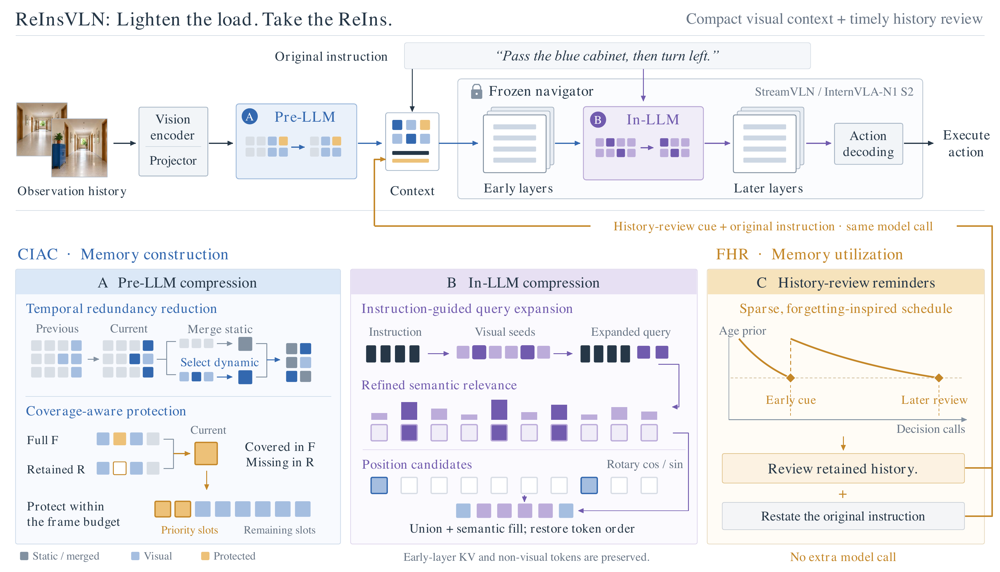

text
Task and Evidence
ReInsVLN 研究连续视觉语言导航中一个容易混淆的问题。历史帧被保留，并不代表冻结的导航器会在后续决策中正确读取它们。作者先构造 ReInsBench，在相同历史、相同环境状态和不同提示条件下继续执行，测量“提醒模型回看历史”能否挽回本来会失败的 continuation。198 个受控实例中，历史复查得到 64 个成功延续，中性提醒得到 53 个，无额外提示得到 40 个。这一结果把 memory utilization 从直觉变成了一个可测试变量。
随后提出 ReInsVLN。它不更新导航模型参数，而是在视觉上下文的构建和已有决策调用中加入 CIAC 与 FHR。论文在 R2R Val-Unseen 上用 StreamVLN 和 InternVLA-N1 测试，报告成功率、SPL、导航误差，同时测量 token、prefill 延迟和 KV cache。核心证据是压缩后上下文更短，且在加入历史复查后成功率继续提高。
figure
Original Mechanism

Cheng et al. · Figure from the original paper, converted from the authors’ editable PDF · arXiv perpetual non-exclusive license · Paper & Caption ↗
图 1 的上半部分给出了数据流。观测历史先经过 vision encoder 和 projector，再进入冻结 navigator。CIAC 位于视觉 token 进入语言模型的路径上，FHR 则把一条“review retained history”提示和原始 instruction 放回同一次 decision call。这样 FHR 不增加一个额外的模型调用，也不取回已经丢弃的帧。
CIAC 分成两步。Pre-LLM 阶段比较相邻帧相同 patch 位置的 cosine similarity，把高相似 token 视为 static，聚类合并静态 token，同时给 dynamic token 保留保护槽位。覆盖保护比较当前帧和已保留 token 的覆盖情况，把 retained context 未覆盖的内容优先放进帧预算。In-LLM 阶段以 instruction 为 query，并用视觉 seed 扩展 query，在第 20 层选择 instruction relevance 与位置共同决定的 token，恢复原始顺序后继续后面的层。图中的三条路径分别对应 memory construction、memory utilization 和 native action decoding。
equation
Compression Formulation
对相邻帧同一 patch 位置的 token $x_{t-1,i}$ 与 $x_{t,i}$，作者用相似度 $s_i=\cos(x_{t-1,i},x_{t,i})$ 判断时间冗余。阈值以上的 token 进入 static 集合 $S$，其余进入 dynamic 集合 $D$。在帧预算 $B_{pre}$ 下，静态 token 被聚类为代表，动态 token 由显著性或覆盖保护选取。这个操作只依赖当前及过去帧，因此适用于 causal streaming。
默认设置是每个符合条件的帧从 196 个 token 保留 128 个。覆盖和时间相似度阈值均为 0.9，最多保护 $K=8$ 个 dynamic token。之后在 LLM 内再以 0.75 keep ratio 从 128 个 token 保留 96 个。这里的“memory”是冻结模型上下文中的保留视觉 evidence，预算约束同时作用于 token 数和 KV cache。
s_i=\cos(x_{t-1,i},x_{t,i}),\qquad X_t
ightarrow \widetilde X_t,\quad |\widetilde X_t|\le B_{pre}equation
Reminder Schedule
FHR 不估计模型真实的 recall probability，而是使用一个明确的时间先验。令 $t$ 是 decision call，$t_{last}$ 是上次提醒，$ au_k$ 是第 $k$ 次提醒的间隔，年龄先验写成 $q(t)=\exp[-(t-t_{last})/ au_k]$。当 $q(t)\le e^{-1}$，等价于 $t-t_{last}\ge au_k$，插入历史复查提示并更新 $t_{last}$。提示要求模型根据原始 instruction 查看现有历史，再继续原来的 action decoding。
这一步的作用是改变读取时机。CIAC 决定哪些 token 能留下，FHR 决定什么时候让模型显式重新访问它们。两者共同说明保留容量和读取策略需要同时评估。
q(t)=\exp\left(-
rac{t-t_{last}}{ au_k}
ight),\qquad q(t)\le e^{-1}\Rightarrow ext{review history}text
Training and Inference
ReInsVLN 是 training-free。作者不反向更新 StreamVLN、InternVLA-N1 或它们的视觉语言主干。推理时，Pre-LLM 先做 causal token merge 和 dynamic protection，In-LLM 在第 20 层选择 token，FHR 只在已有 decision call 里追加文本提示，然后沿原来的 action execution pipeline 输出动作。由于没有额外 model call，FHR 的成本主要是提示文本和该次调用中的少量上下文处理。
这一训练设置让实验直接回答“同一个冻结导航器能否通过更好的历史组织获得收益”。但它也意味着压缩阈值、保护槽位、提醒间隔是人为设定的推理策略，不由导航损失学习。把这个思路迁移到 LingBot-Map 时，对应的可学习版本可以把覆盖估计、语义相关度和历史读取门控接到写入前，但必须重新验证几何损失是否能反传到这些门控。
table
Experiments and Limits
R2R Val-Unseen 共 1,839 个 episode。StreamVLN 上，ReInsVLN 的 SR 为 64.27%，SPL 为 56.42%，NE 为 4.35 m，相比原生 StreamVLN 分别提升 8.48、6.52 个百分点并降低 0.46 m。InternVLA-N1 上对应 SR 64.44%、SPL 58.79%、NE 4.09 m。CIAC 单独使用时基本保持成功率，FHR 单独使用时在两种 navigator 上分别带来 5.17 和 2.99 个百分点的 SR 提升，组合后达到最高结果。
在 99 个匹配 decision calls 的成本测试中，StreamVLN 的视觉 token、prefill latency、KV cache 分别下降 11.88%、5.14%、10.27%。InternVLA-N1 的对应下降为 45.65%、21.77%、32.25%。论文还在真实人形和四足机器人上报告序列指令实验。限制也很明确。ReInsBench 的净收益区间包含轻微负值，FHR 的提醒间隔是启发式，论文没有证明它学习了真实遗忘曲线。导航成功率的收益也不能直接推出几何重建会改善。
| Setting | SR ↑ | SPL ↑ | NE ↓ |
|---|---|---|---|
| StreamVLN | 64.27% | 56.42% | 4.35 m |
| InternVLA-N1 | 64.44% | 58.79% | 4.09 m |
text
Connection to Streaming Reconstruction
对 LingBot-Map，最直接的对应是把 CIAC 的 coverage-aware protection 改写为历史 KV 或局部几何 token 的 admission rule。当前帧 token 与历史 token 的相似度可以用于识别重复观测，语义或实例边界可以保护当前视图中历史未覆盖的区域。FHR 对应读取端的 query scheduling，例如当当前几何不确定度持续升高，给 memory read 一个更高的历史复查权重。
这篇论文真正提供的是一个实验拆解。需要把“写入了多少”和“后续有没有读取”分开测量，再比较相同 token budget 下的几何误差、完整度、边界质量和运行成本。它支持我们把 semantic fusion 放到 memory formation 前，但不能单独证明语义会改善深度或位姿。那个结论仍需在 LingBot-Map 上用可微展开和去掉语义的对照验证。
Discussion
Reading Questions
question
answer
question
answer
question
answer
References
Figure 1 is reproduced from the authors’ original editable PDF without conceptual modification. First public version: 19 October 2026, v1. Results below refer to that version.
Verified on 2026-11-10. Paper results refer to the linked versions. Repository references were checked on this date.